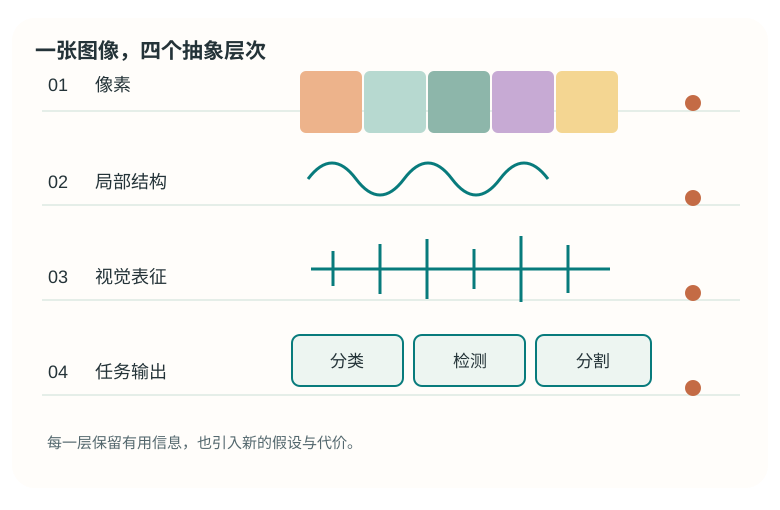

Visual Intelligence · 28 Chapters
从像素，
到视觉理解。
一份从计算规则走向表征学习的计算机视觉教程。每个问题都从直观案例开始，逐步展开图解、数学、可运行的最小实验与方法边界。

Learning pathway
一条有因果关系的学习路径
先认识数字图像和手工特征为何有效，再理解神经网络如何学习特征，最后比较不同模型如何处理分类、检测和分割任务。
Course atlas
全部课程 · 28 章
视觉基础
从像素、经典特征到 CNN 的基本计算CHAPTER 01
计算机视觉概述与发展简史
学科起源 / 四大发展阶段 / 关键里程碑
深化阅读 · 图解与推导CHAPTER 02数字图像处理基础
像素与色彩空间 / 图像滤波 / 边缘检测
深化阅读 · 图解与推导CHAPTER 03传统特征提取方法
SIFT特征 / HOG特征 / Haar-like特征
深化阅读 · 图解与推导CHAPTER 04神经网络与反向传播
感知机与MLP / 激活函数 / 反向传播推导
深化阅读 · 图解与推导CHAPTER 05卷积神经网络原理
卷积运算 / 池化层 / 感受野与参数共享
深化阅读 · 图解与推导CHAPTER 06深度学习框架入门
PyTorch基础 / 自动求导 / 训练循环
深化阅读 · 图解与推导CHAPTER 07图像分类任务与数据集
ImageNet / 数据加载Pipeline / 评估指标
深化阅读 · 图解与推导CHAPTER 08AlexNet——深度学习视觉起点
GPU并行训练 / ReLU与Dropout / 2012年革命
深化阅读 · 图解与推导主干网络
AlexNet、VGG、ResNet、ViT、ConvNeXt训练与评估
优化策略、实验设计与选型目标检测
边界框、两阶段与单阶段检测器图像分割
语义、实例、全景与医学图像工程实践
增强、迁移、部署与性能优化基础模型与综合项目
自监督、多模态与端到端实践如何使用这套教程？
建议先完成第 1–5 章；熟悉卷积与反向传播后，再进入主干网络和检测分割专题。每篇文章独立解释前置概念，章节间也提供前后导航。